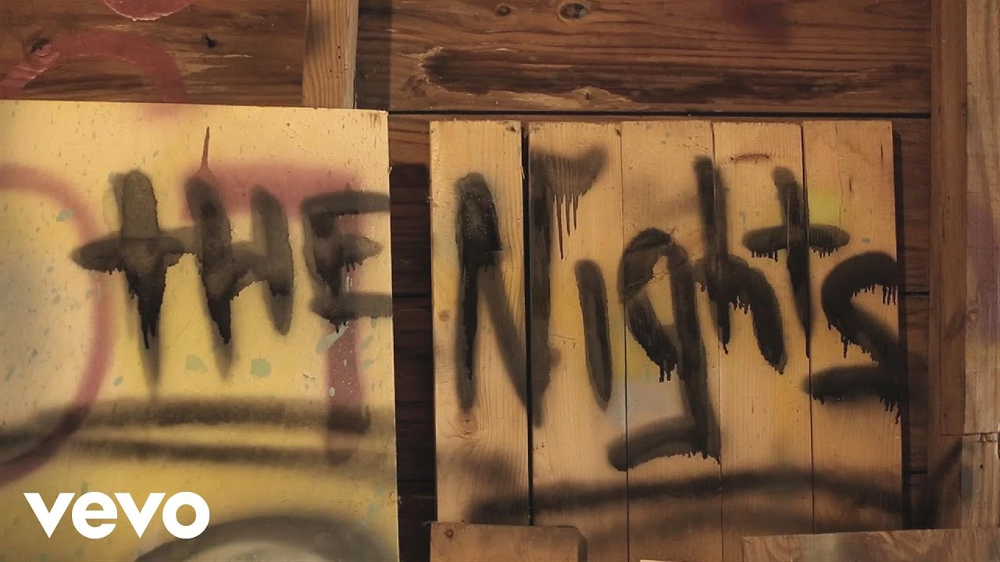

Song by Avicii
Original videoThe Nights
Other songs

Once upon a younger year
When all our shadows disappeared
The animals inside came out to play
Went face to face with all our fears
Learned our lessons through the tears
Made memories we knew would never fade
One day, my father, he told me, "Son, don't let it slip away"
He took me in his arms, I heard him say
"When you get older your wild heart will live for younger days
Think of me if ever you're afraid"
He said, "One day, you'll leave this world behind
So live a life you will remember"
My father told me when I was just a child
"These are the nights that never die"
My father told me
"When thunderclouds start pouring down
Light a fire they can't put out
Carve your name into those shining stars"
He said, "Go venture far beyond the shores
Don't forsake this life of yours
I'll guide you home no matter where you are"
One day, my father, he told me, "Son, don't let it slip away"
When I was just a kid, I heard him say
"When you get older your wild heart will live for younger days
Think of me if ever you're afraid"
He said, "One day, you'll leave this world behind
So live a life you will remember"
My father told me when I was just a child
"These are the nights that never die"
My father told me
"These are the nights that never die"
My father told me
My father told me